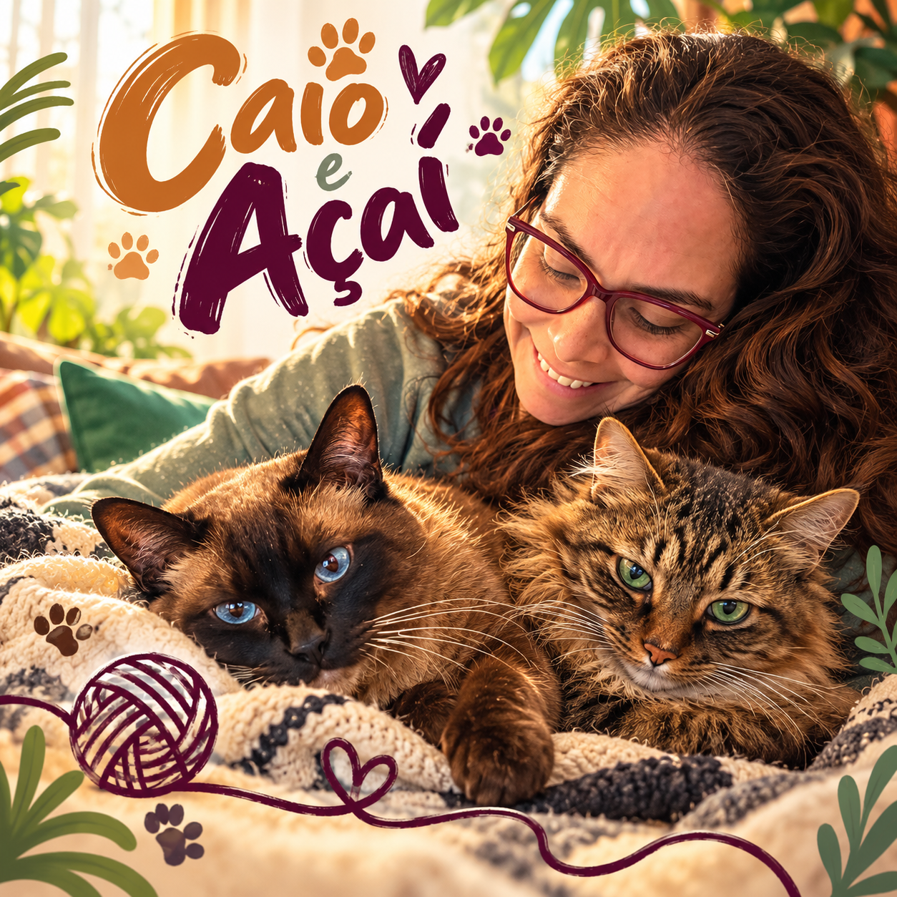

Para empresas
Conectando Horizontes
Una identidad musical para Nordosudo que transforma su actividad y sus valores en un mensaje sonoro memorable.
El audio todavía no está disponible. Agregá el MP3 a la carpeta assets.
Una marca, un encuentro, un vínculo especial. Transformamos historias reales en canciones para emocionar, conectar y permanecer en la memoria.
Escuchá cuatro historias reales: una marca, un encuentro y dos homenajes afectivos. Conocé algunos de nuestros trabajos. Cada canción nace de una historia particular y tiene una dirección creativa pensada para transmitir su esencia.
Una identidad musical para Nordosudo que transforma su actividad y sus valores en un mensaje sonoro memorable.
Una canción creada para el encuentro internacional de emprendedores evolutivos en Miramar de Ansenuza, que celebra el propósito, la libertad y la conexión.

Una canción alegre y tierna sobre dos gatos y sus travesuras. Una muestra de cómo las historias cotidianas pueden convertirse en recuerdos únicos.
Un homenaje musical a una abuela de Taquari, sus recetas, su jardín y los encuentros familiares. Una canción que transforma los recuerdos cotidianos en un legado afectivo.
Tal vez ya tenés una idea. O tal vez nunca se te ocurrió que ese momento, esa persona o ese proyecto podrían tener su propia música. Explorá las posibilidades.
Una canción puede representar tu identidad, comunicar un mensaje o reconocer a quienes hacen crecer tu empresa.
Una identidad musical para reunir personas, acompañar un momento y dejar un recuerdo que perdure.
Hay días que merecen una canción propia, creada para quienes los viven y para quienes los recuerdan.
Para agradecer, expresar amor, recordar a alguien o guardar para siempre una historia que importa.
Nos contás quién o qué querés homenajear, el mensaje, a quién va dirigida la canción y qué estilo musical imaginás.
Desarrollamos la letra, el estilo y la producción con dirección creativa humana y herramientas de inteligencia artificial.
Recibís la canción en MP3, una portada personalizada y la letra en PDF. Acordamos las condiciones y los posibles ajustes antes de empezar.
No es simplemente una canción con un nombre. Es una historia que encuentra ritmo, voz y un lugar en la memoria.Dirección creativa y producción musical: Rafael Guimarães Pereira
Contanos tu idea. Hablemos del estilo, el objetivo, los tiempos y el formato más adecuado.
Identidad sonora, campañas, congresos, casamientos, cumpleaños, homenajes, recuerdos familiares y canciones dedicadas a mascotas.
Cada proyecto se define a partir de tu historia y tus necesidades.